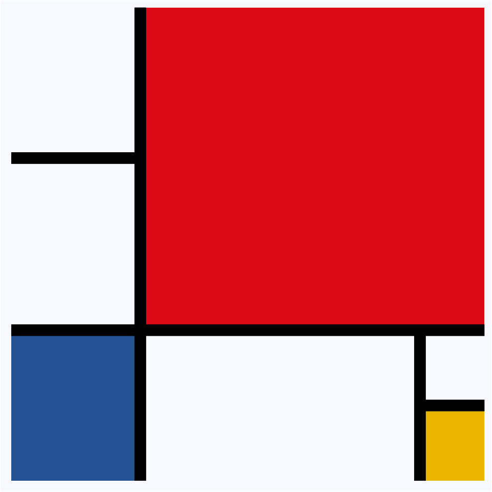
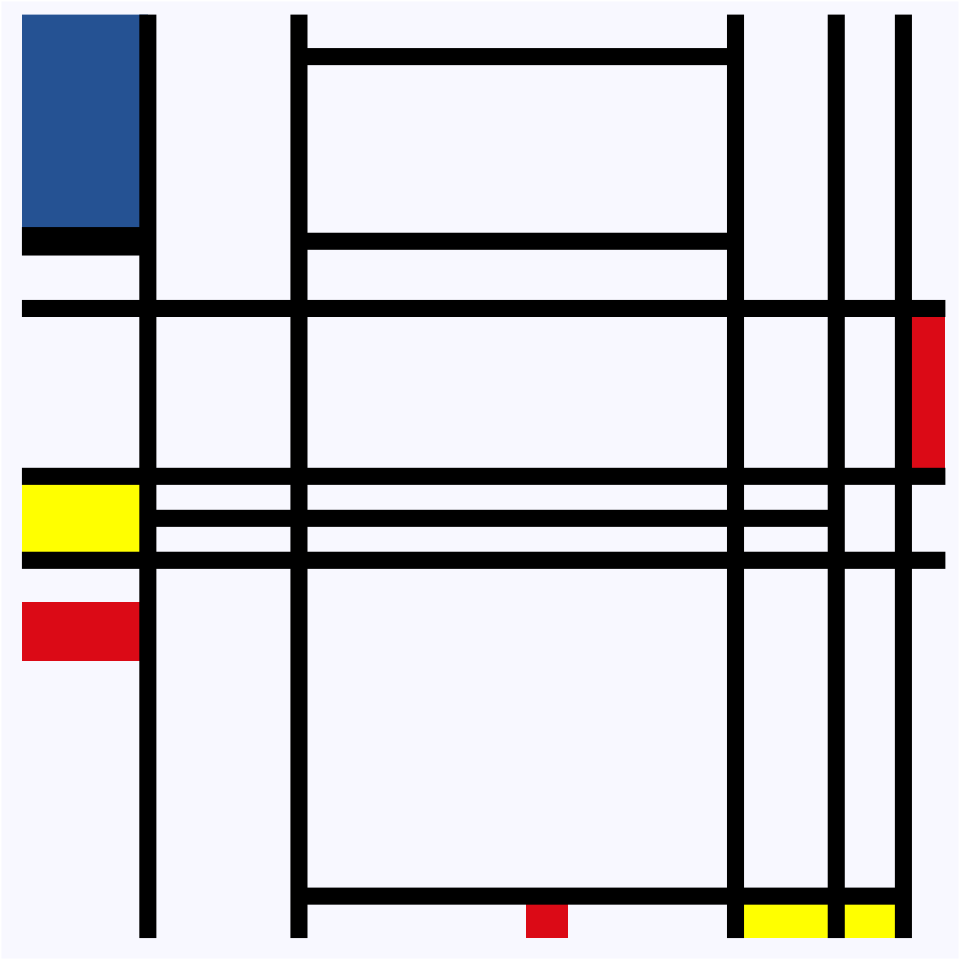
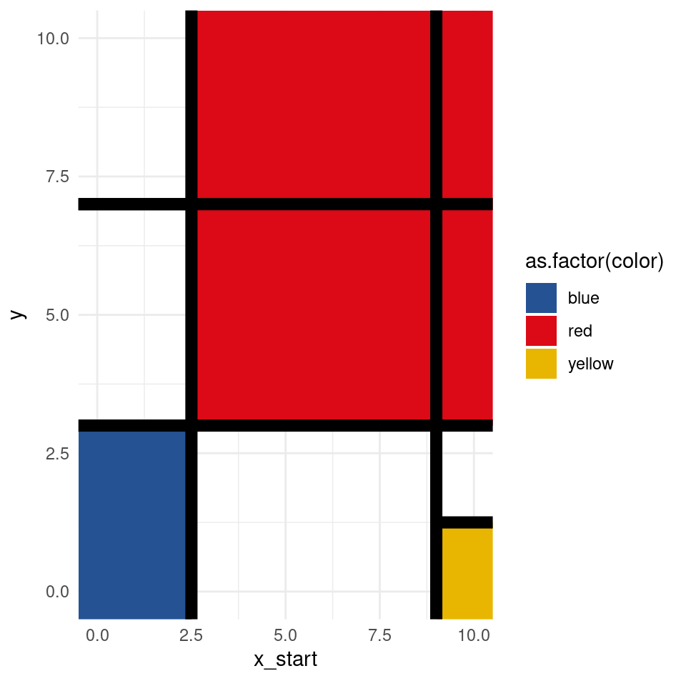

library(ggplot2)
library(gganimate)my_theme <- function(base_size = 12, base_family = "Helvetica"){
theme_minimal() +
theme(axis.title.y = element_blank(),axis.title.x = element_blank(),
plot.title = element_text(face="bold", size=16),
axis.text = element_blank(),
plot.background = element_rect(fill = 'ghostwhite',color='white'),
panel.grid = element_blank(),
legend.position = 'None', legend.title = element_blank())
}set.seed(1)
rectangles = data.frame(
xmin = c(2.5, -0.5, 9),
xmax = c(10.5, 2.5, 10.5),
ymin = c(3, -0.5, -0.5),
ymax = c(10.5, 3, 1.25),
color = c("red", "blue", "yellow")
)
x_values = data.frame(x = c(2.5))
y_values = data.frame(y = c(3))
half_lines_horizontal = data.frame(
x_start = c(-0.5, 9),
x_end = c(2.5, 10.5),
y = c(7, 1.25)
)
half_lines_vertical = data.frame(
x = 9,
y_start = -0.5,
y_end = 3
)
ggplot() +
geom_rect(data = rectangles, aes(xmin = xmin, xmax = xmax, ymin = ymin,
ymax = ymax, fill = as.factor(color))) +
geom_vline(xintercept = x_values$x, linewidth = 4) +
geom_hline(yintercept = y_values$y, linewidth = 4) +
coord_cartesian(xlim = c(0, 10), ylim = c(0, 10)) +
geom_segment(data = half_lines_horizontal, aes(x = x_start, xend = x_end, y = y),
linewidth = 4) +
geom_segment(data = half_lines_vertical, aes(x = x, y = y_start, xend = x,
yend = y_end), linewidth = 4) +
scale_fill_manual(values = c("blue" = "#255293", "red" = "#db0a16",
"yellow" = "#E8B600")) +
my_theme()
df = data.frame(
x = c(3, 8, 8.2, 10),
y = c(0, 0, 0, 0))
x_values = data.frame(x = c(1, 2.8, 8, 9.2, 10))
y_values = data.frame(y = c(4, 5, 7))
half_lines = data.frame(
x_start = c(2.8, 2.8, 1, 2.8),
x_end = c(8, 8, 9.2, 10),
y = c(10, 7.8, 4.5, 0))
rectangles = data.frame(
xmin = c(-0.5, -0.5, -0.5, 5.5, 8, 10),
xmax = c(1, 1, 1, 6, 10, 10.5),
ymin = c(7.8, 4, 2.8, -0.5, -0.5, 5),
ymax = c(11, 5, 3.5, 0, 0, 7),
color = c("blue", "yellow", "red", "red", "yellow", "red"))
df |>
ggplot()+
geom_rect(data = rectangles, aes(xmin = xmin,
xmax = xmax,
ymin = ymin,
ymax =ymax,
fill=as.factor(color))) +
geom_vline(xintercept = x_values$x, linewidth = 3)+
geom_hline(yintercept = y_values$y, linewidth = 3) +
coord_cartesian(xlim = c(0,10), ylim = c(0,10))+
geom_segment(data = half_lines, aes(x = x_start, xend = x_end, y = y), linewidth = 3)+
annotate(geom = "segment",
y = 7.8,
x = -0.5,
xend = 1,
linewidth = 5)+
scale_fill_manual(values = c("blue" = "#255293","red" = "#db0a16", "yellow" = "yellow"))+
my_theme()
# Load necessary libraries
library(ggplot2)
library(gganimate)
# Data for the first plot (lines and rectangles)
vertical_lines1 <- data.frame(
state = "First",
x = c(2.5, 9),
y_start = c(NA, -0.5),
y_end = c(NA, 3)
)
horizontal_lines1 <- data.frame(
state = "First",
y = c(3, 7),
x_start = c(NA, -0.5),
x_end = c(NA, 2.5)
)
segments1 <- data.frame(
state = "First",
x_start = c(-0.5, 9),
x_end = c(2.5, 10.5),
y = c(7, 1.25)
)
rectangles1 <- data.frame(
state = "First",
xmin = c(2.5, -0.5, 9),
xmax = c(10.5, 2.5, 10.5),
ymin = c(3, -0.5, -0.5),
ymax = c(10.5, 3, 1.25),
color = c("red", "blue", "yellow")
)
# Data for the second plot (lines and rectangles)
vertical_lines2 <- data.frame(
state = "Second",
x = c(1, 2.8, 8, 9.2, 10),
y_start = c(NA, NA, NA, NA, NA),
y_end = c(NA, NA, NA, NA, NA)
)
horizontal_lines2 <- data.frame(
state = "Second",
y = c(4, 5, 7),
x_start = c(NA, NA, NA),
x_end = c(NA, NA, NA)
)
segments2 <- data.frame(
state = "Second",
x_start = c(2.8, 2.8, 1, 2.8),
x_end = c(8, 8, 9.2, 10),
y = c(10, 7.8, 4.5, 0)
)
rectangles2 <- data.frame(
state = "Second",
xmin = c(-0.5, -0.5, -0.5, 5.5, 8, 10),
xmax = c(1, 1, 1, 6, 10, 10.5),
ymin = c(7.8, 4, 2.8, -0.5, -0.5, 5),
ymax = c(11, 5, 3.5, 0, 0, 7),
color = c("blue", "yellow", "red", "red", "yellow", "red")
)
# Combine the data frames with a consistent 'state' variable
all_vertical_lines <- rbind(vertical_lines1, vertical_lines2)
all_horizontal_lines <- rbind(horizontal_lines1, horizontal_lines2)
all_segments <- rbind(segments1, segments2)
all_rectangles <- rbind(rectangles1, rectangles2)
# Create the animated plot
p <- ggplot() +
geom_rect(data = all_rectangles, aes(xmin = xmin, xmax = xmax, ymin = ymin, ymax = ymax, fill = as.factor(color))) +
geom_vline(aes(xintercept = x), data = all_vertical_lines, linewidth = 3) +
geom_hline(aes(yintercept = y), data = all_horizontal_lines, linewidth = 3) +
geom_segment(aes(x = x_start, xend = x_end, y = y), data = all_segments, linewidth = 3) +
scale_fill_manual(values = c("blue" = "#255293", "red" = "#db0a16", "yellow" = "#E8B600")) +
transition_states(state, transition_length = 2, state_length = 2) +
coord_cartesian(xlim = c(0, 10), ylim = c(0, 10)) +
theme_minimal()
# Render the animation
anim <- animate(p, duration = 10, fps = 20, end_pause = 5)
anim